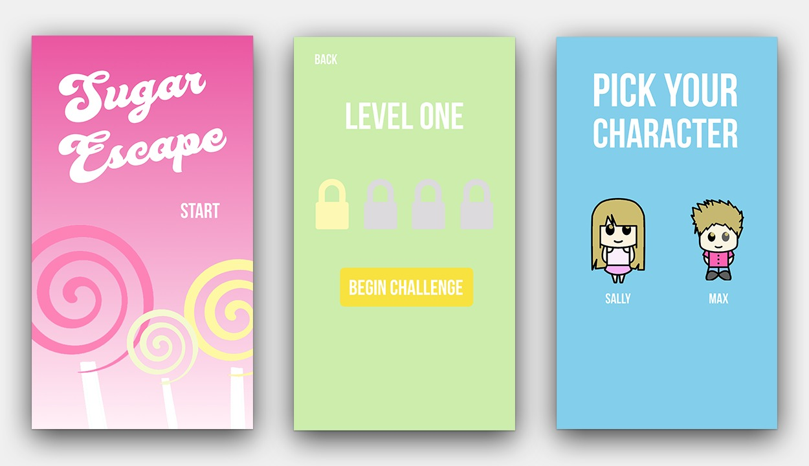
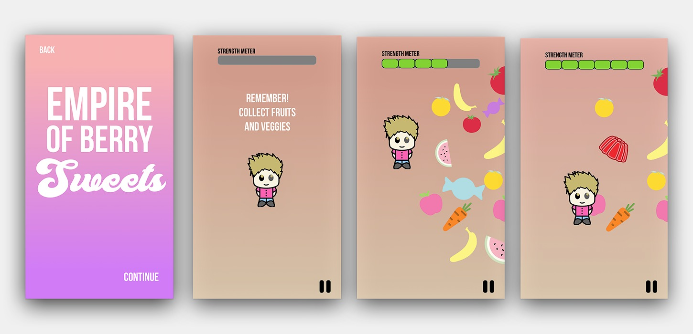
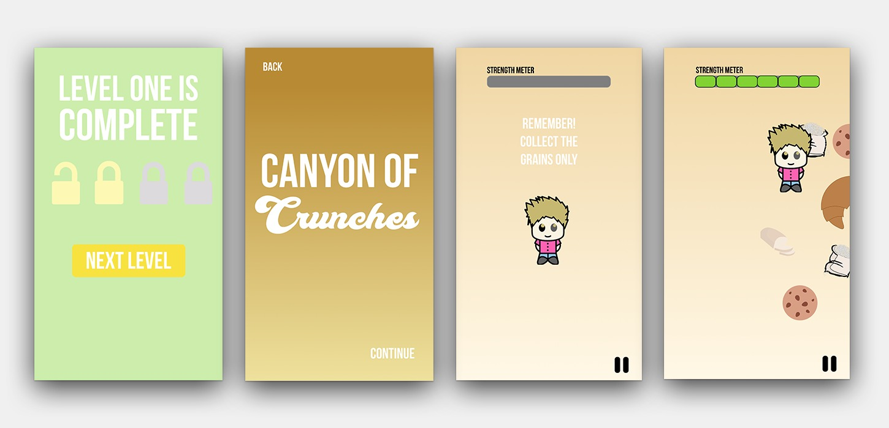
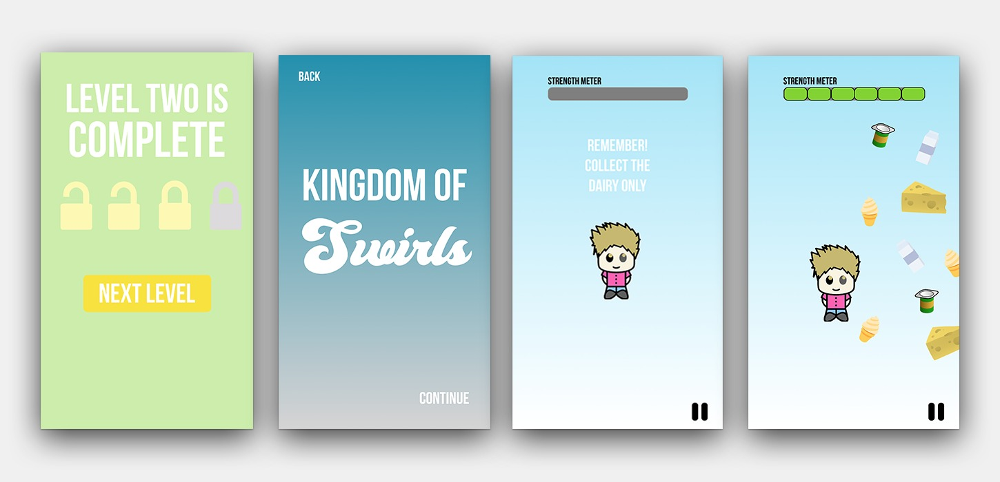
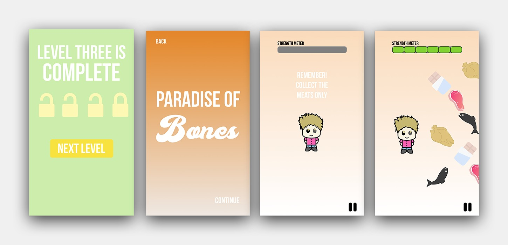
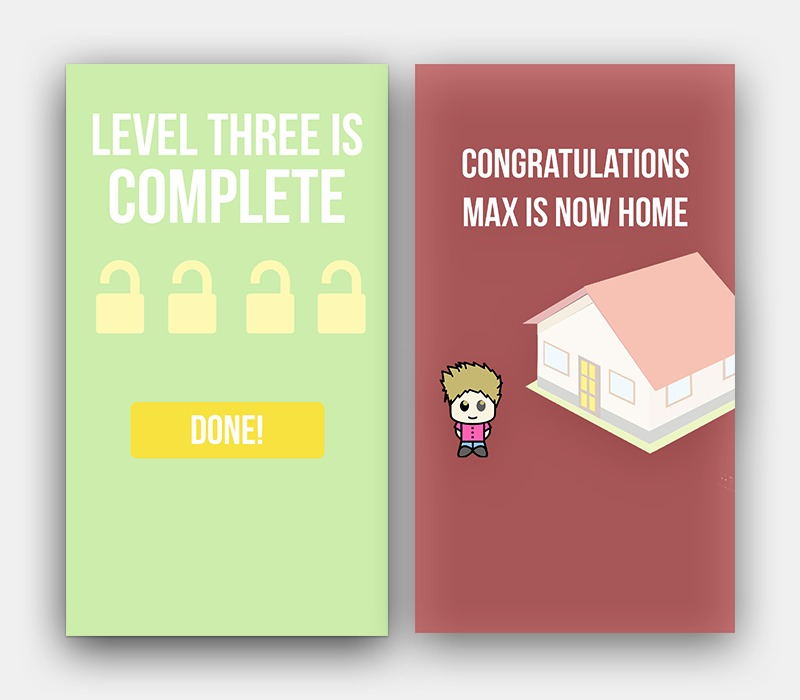

SUGAR ESCAPE
BACKGROUND
The goal of this project was to educate children from ages three to six about the
Canadian Food Guide.
GAME CONCEPT
The game is designed to consist of four levels, each representing one of the
categories in the Canadian Food Guide. Each player is on a mission to guide
Sally and Max, the two characters, conquer the four levels and safely return
home by making healthy food choices.
GAME DESIGN AND MECHANICS
Sugar Escape, is an interactive application where children are taught about the
basic Canadian Food Groups in a resourceful and fictional storyline. The
mission begins with the first of four levels, each level representing the four
different food groups. To return home, Sally or Max must travel to each land and
capture the nutritious items that relate to the corresponding food category.
When beginning a level, the strength meter at the top of the screen determines
whether the player will successfully move forward to the next level.

Each item is designed to illustrate the corresponding food category in the Canadian Food Guide. As the players travel to each realm in Sugar Escape, healthy and unhealthy items are navigated in the screen, disappearing as the player correctly captures the food items. Using the player’s finger to swipe and tap the character, points are earned through the strength meter, when nutritious items are collected. Once the strength meter has reached its distance, another level is unlocked.




Using the three levels of Bloom’s Taxonomy, the colourful and fun game
educates and ensures that children are reciprocating the educational
significance of the game. Sugar Escape incorporates the opportunity for
children to assess their memory with The Canadian Food Guide, and recognize
healthy and unhealthy food choices.
The application is designed using complimentary colours to allure a young
audience. In representation of this game and the concept of food, bright and
pastel colours are used to symbolize the appealing appetite of healthy and nonhealthy
foods.
